Youth Sports · Miami Hoops · Product · Photos · Look only · v2
A private team vault so roster families can share game-day photos without putting kids on the open web. Empty = one line + one CTA. Consent defaults protective. Group shots with unresolved kids go to coach hold — no face-AI blur in v1. Neon Miami Hoops face (current DESIGN.md).
Parents want game and team photos on the platform so teammates’ families can see them. They are also sensitive about kids’ pictures being “online.” Job: private team photo sharing that feels safer than group texts / Facebook, and easy enough on game day that parents actually post.
v2 delta: Pete’s pack used outdated cream/navy + Mercury light sidebar as the product face, and missed the briefed Refero locks. This rebuild uses current neon tokens and puts the four Refero locks in refs/ and inline below.
Copied into refs/ with URLs. Product face stays neon. Mercury is structure discipline only — dashed outline = craft-only, not YSP face.
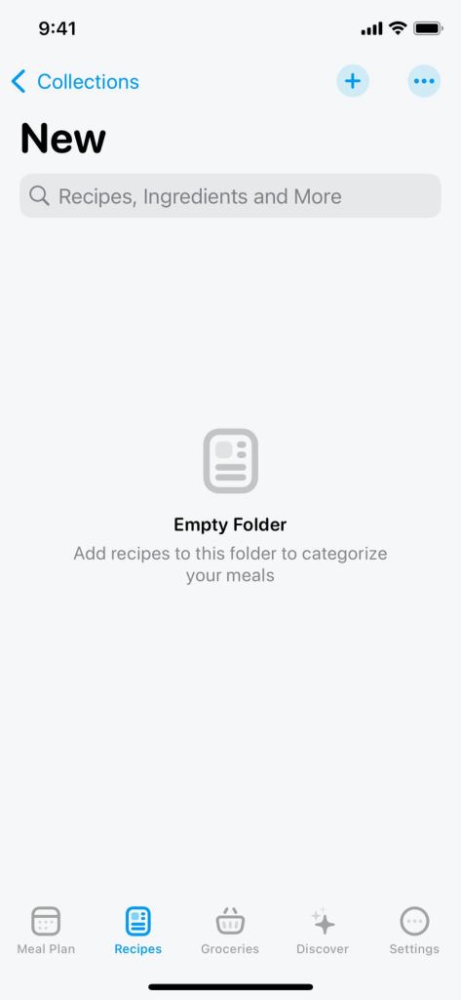
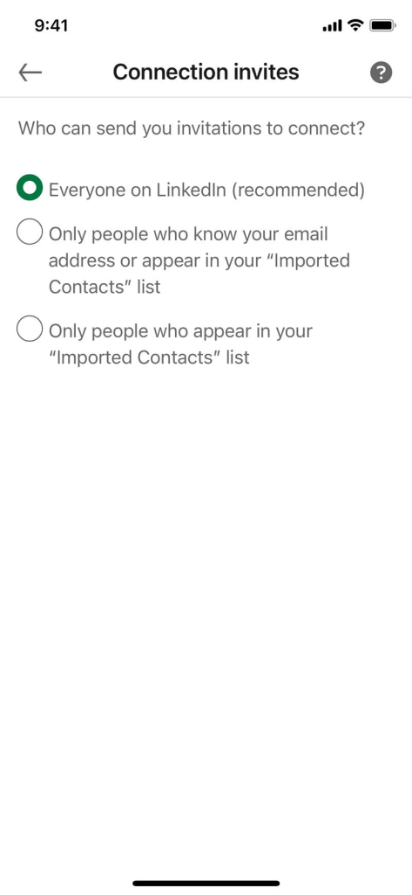
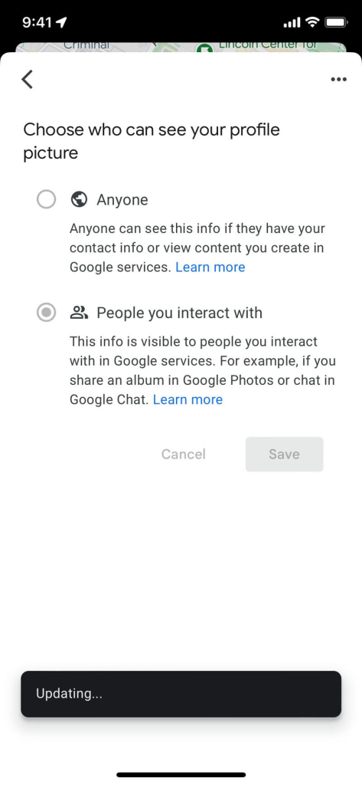
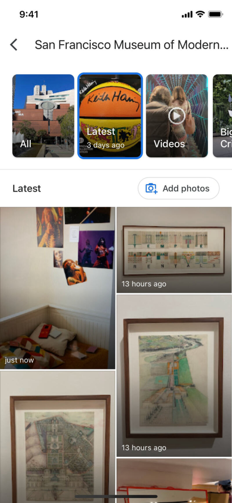
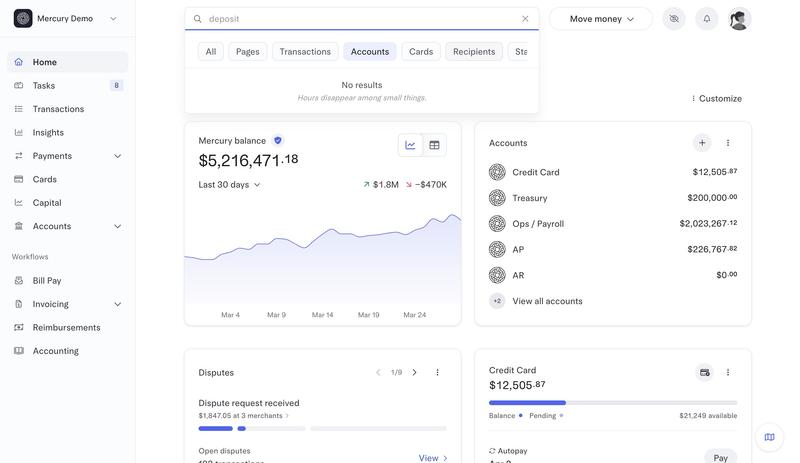
Before: Team chrome today has Team / Feed / Film. Film is link cards only. No Photos home; player profile can upload a roster headshot only. Shown in current neon chrome so the gap is clear against live YSP.
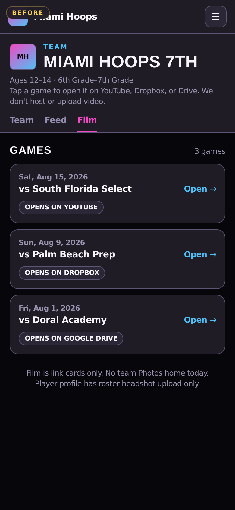
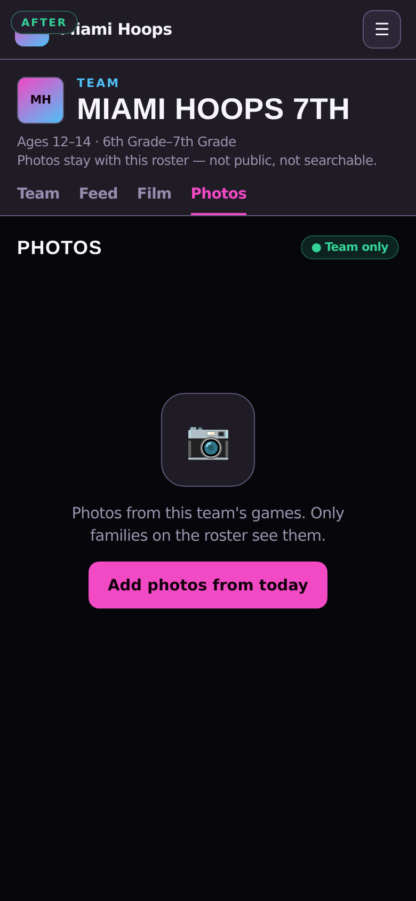
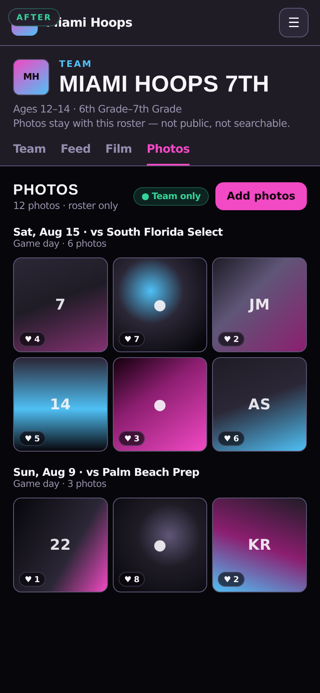
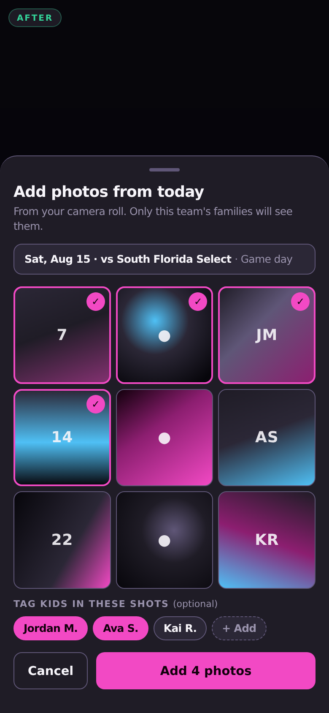
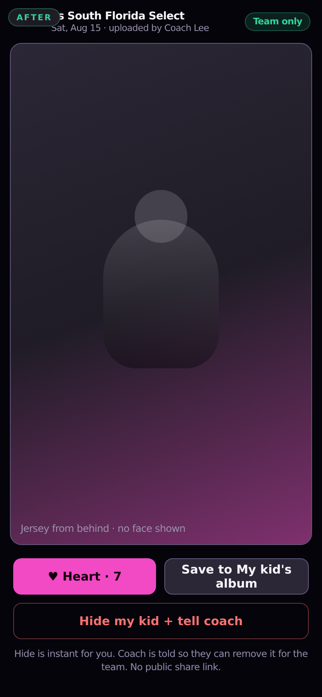
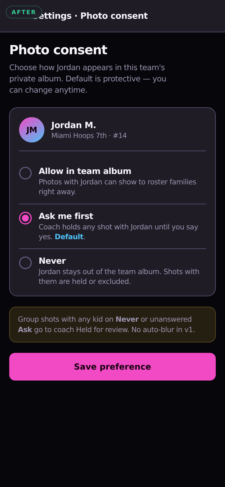
Primary group-shot path: if any tagged kid is Never or unanswered Ask me first, the shot holds here. Auto-blur is out of v1 (no paid face AI). Manual kid tags on upload are the light UX.
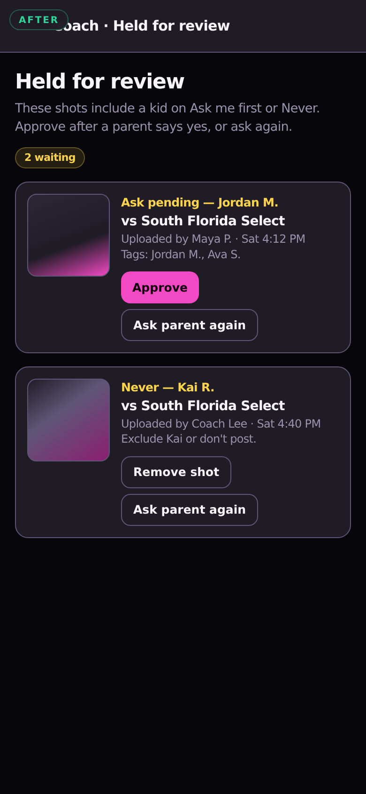
Desktop uses dark neon nav chrome matching live YSP — not Mercury light sidebar / cream navy. Mercury remains craft-only above.
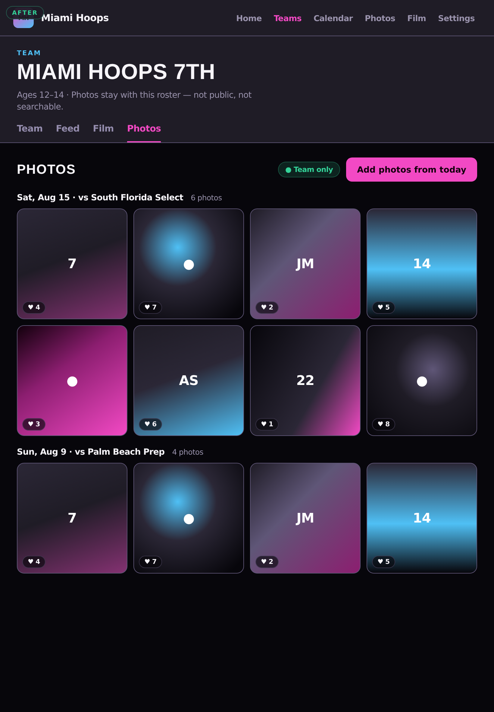
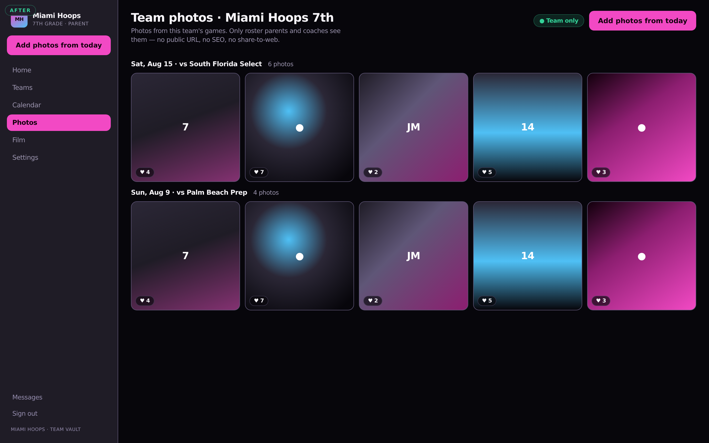
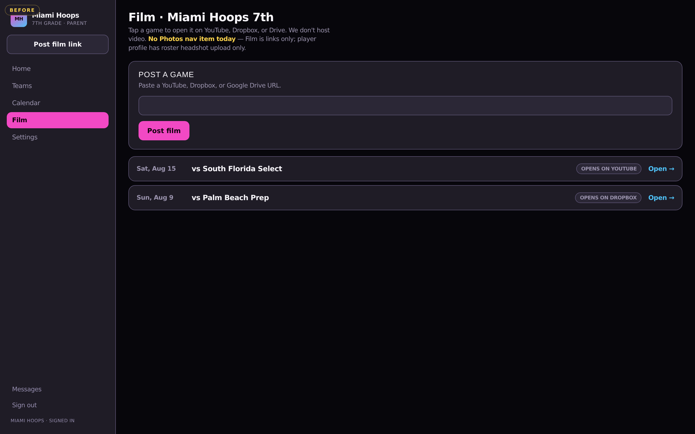
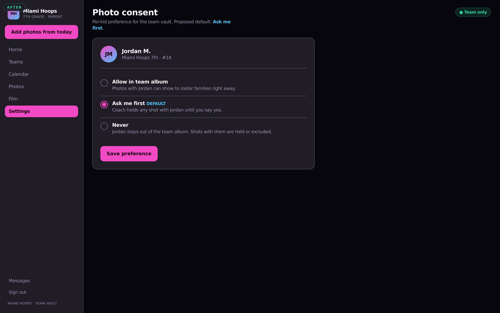
| # | Lock | Proposal |
|---|---|---|
| 1 | Vault | Team only — roster parents + coaches. No public URL, SEO, share-to-web, or club-wide gallery. |
| 2 | Consent radios | Allow / Ask me first / Never. Default = Ask me first. |
| 3 | Group shots | Hold for coach review if any kid is Never or unanswered Ask. Manual tags OK. No auto-blur v1. |
| 4 | Game-day upload | Event → “Add photos from today” → multi-select camera roll → done. |
| 5 | Engagement | Heart + Save to My kid's album. No comment threads on kid photos. |
| 6 | Report | One tap Hide my kid (instant for reporter) + Tell coach. |
| 7 | Download | Parents save to album/device; no reshare link. |
| 8 | Empty | One line + one primary CTA (pink / ink). Never dashed drop hero. |
1. Default consent? Proposed: Ask me first (protective). Alternatives: Allow (faster posts) or Never (too hostile for a team album).
2. Who sees the vault? Proposed: Team only (roster parents + coaches). Not whole club. Org staff visibility left for Paul if needed later.
3. Can parents download originals? Proposed: Yes — save to My kid's album / device; no reshare link.
4. Coach approval before anything shows, or post-then-report? Proposed: Hybrid — Allow kids post through; Ask/Never kids hold for coach. Not universal pre-approval (too slow on game day) and not pure post-then-report for restricted kids.
No build, no youth-sports-app edits, no Claude until Paul says look-yes and hub assigns implement.
Example data only. Photo tiles are court/ball/jersey gradients and initials — no real kids' faces.
Self-contained HTML frames under frames/ with current neon Miami Hoops tokens from DESIGN.md / globals.css (background #07060B, brand #F249C4, accent #4FC0F5, Inter + Anton). Captured with headless Chrome at 390×844, 820×1180, and 1440×900. Look only — nothing merged, no app PR.